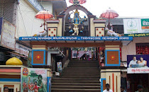

Chuttippara
Malayalappuzha Temple

Subal Park
Mor Ignatius Dayara
Pathanamthitta
It is the most populous city in Kerala
It is a major tourist centre in Kerala
Thousands of Tourish visit here every year in various locations
It is a notable academic and research hub